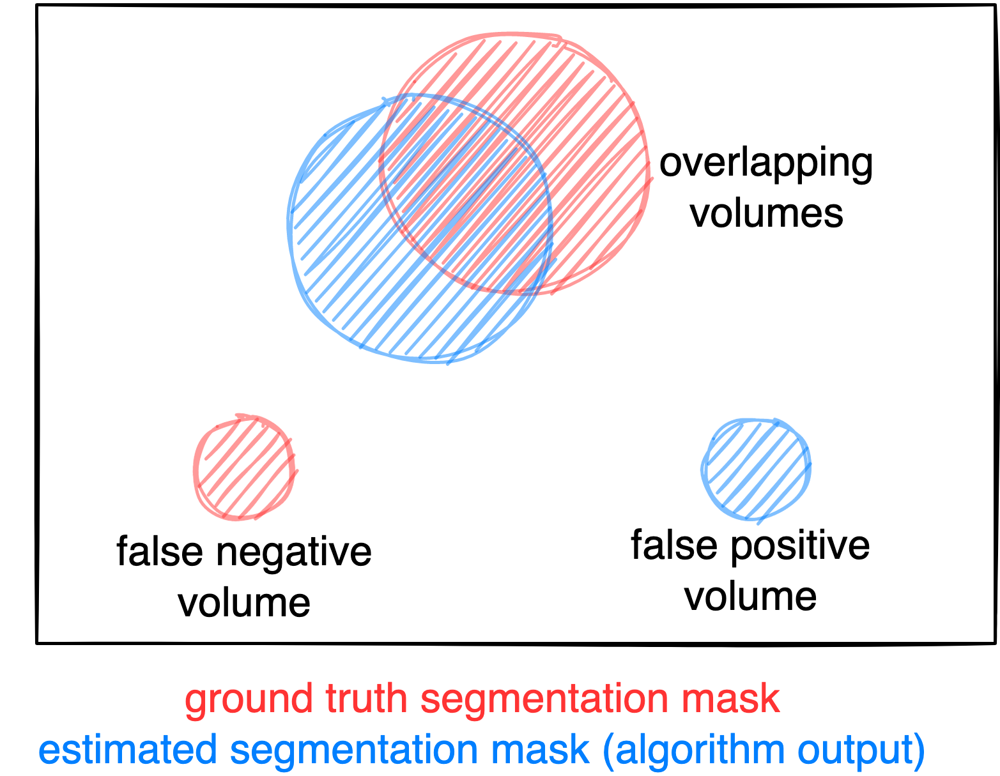

autoPET-I
The segmentation frontier
Introduction
Positron Emission Tomography / Computed Tomography (PET/CT) is an integral part of the diagnostic workup for various malignant solid tumor entities. Due to its wide applicability, Fluorodeoxyglucose (FDG) is the most widely used PET tracer in an oncological setting reflecting glucose consumption of tissues, e.g. typically increased glucose consumption of tumor lesions. As part of the clinical routine analysis, PET/CT is mostly analyzed in a qualitative way by experienced medical imaging experts. Additional quantitative evaluation of PET information would potentially allow for more precise and individualized diagnostic decisions.A crucial initial processing step for quantitative PET/CT analysis is segmentation of tumor lesions enabling accurate feature extraction, tumor characterization, oncologic staging and image-based therapy response assessment. Manual lesion segmentation is however associated with enormous effort and cost and is thus infeasible in clinical routine. Automation of this task is thus necessary for widespread clinical implementation of comprehensive PET image analysis.Recent progress in automated PET/CT lesion segmentation using deep learning methods has demonstrated the principle feasibility of this task. However, despite these recent advances tumor lesion detection and segmentation in whole-body PET/CT is still a challenging task. The specific difficulty of lesion segmentation in FDG-PET lies in the fact that not only tumor lesions but also healthy organs (e.g. the brain) can have significant FDG uptake; avoiding false positive segmentations can thus be difficult. One bottleneck for progress in automated PET lesion segmentation is the limited availability of training data that would allow for algorithm development and optimization.
To promote research on machine learning-based automated tumor lesion segmentation on whole-body FDG-PET/CT data we host the autoPET challenge and provide a large, publicly available training data set on TCIA:
AutoPET is hosted at the MICCAI 2022: 
and supported by the European Society for hybrid, molecular and translational
imaging (ESHI)
Grand Challenge
More information about the challenge can be found on Grand Challenge.Task
Automatic tumor lesion segmentation in whole-body FDG-PET/CT on large-scale database of 1014 studies of 900 patients (training database) acquired on a single site:- accurate and fast lesion segmentation
- avoidance of false positives (brain, bladder, etc.)
Database
The challenge cohort consists of patients with histologically proven malignant melanoma, lymphoma or lung cancer as well as negative control patients who were examined by FDG-PET/CT in two large medical centers (University Hospital Tübingen, Germany & University Hospital of the LMU in Munich, Germany).
All PET/CT data within this challenge have been acquired on state-of-the-art PET/CT scanners (Siemens Biograph mCT, mCT Flow and Biograph 64, GE Discovery 690) using standardized protocols following international guidelines. CT as well as PET data are provided as 3D volumes consisting of stacks of axial slices. Data provided as part of this challenge consists of whole-body examinations. Usually, the scan range of these examinations extends from the skull base to the mid-thigh level. If clinically relevant, scans can be extended to cover the entire body including the entire head and legs/feet.
PET/CT acquisition protocol
University Hospital Tübingen: Patients fasted at least 6 h prior to the injection of approximately 350 MBq 18F-FDG. Whole-body PET/CT images were acquired using a Biograph mCT PET/CT scanner (Siemens, Healthcare GmbH, Erlangen, Germany) and were initiated approximately 60 min after intravenous tracer administration. Diagnostic CT scans of the neck, thorax, abdomen and pelvis (200 reference mAs; 120 kV) were acquired 90 sec after intravenous injection of a contrast agent (90–120 ml Ultravist 370, Bayer AG). PET Images were reconstructed iteratively (three iterations, 21 subsets) with Gaussian post-reconstruction smoothing (2 mm full width at half-maximum). Slice thickness on contrast-enhanced CT was 2 or 3 mm.
University Hospital of the LMU in Munich: Patients fasted at least 6 h prior to the injection of approximately 250 MBq 18F-FDG. Whole-body PET/CT images were acquired on state-of-the-art PET/CT scanners (Siemens Biograph mCT, mCT Flow and Biograph 64, GE Discovery 690) and were initiated approximately 60 min after intravenous tracer administration. Diagnostic CT scans of the neck, thorax, abdomen and pelvis (100–190 mAs; 120 kV) were acquired 90 sec after weight-adapted intravenous injection of a contrast agent (Ultravist 300, Bayer AG or Imeron 350, Bracco Imaging Deutschland GmbH). PET Images were reconstructed iteratively (three iterations, 21 subsets) with Gaussian post-reconstruction smoothing (2 mm full width at half-maximum). Slice thickness on contrast-enhanced CT was 3 mm.
Training and test cohort
Training cases: 1,014 studies (900 patients)
Test cases (final evaluation): 200 150 studies
Test cases (preliminary evaluation): 5 studies
A case (training or test case) consists of one 3D whole body FDG-PET volume, one corresponding 3D whole body CT volume and one 3D binary mask of manually segmented tumor lesions on FDG-PET of the size of the PET volume. CT and PET were acquired simultaneously on a single PET/CT scanner in one session; thus PET and CT are anatomically aligned up to minor shifts due to physiological motion.
Training set
Training data consists of 1,014 studies acquired at the University Hospital Tübingen and is made publicly available on TCIA (as DICOM, NiFTI and HDF5 files). After download, you can convert the DICOM files to e.g. the NIfTI format using scripts provided here.
DICOM:NiFTI:
If you use this data, please cite:
Gatidis S, Kuestner T. A whole-body FDG-PET/CT dataset with manually annotated tumor lesions (FDG-PET-CT-Lesions) [Dataset]. The Cancer Imaging Archive, 2022. DOI: 10.7937/gkr0-xv29
Preliminary test set
For the self-evaluation of participating pipelines, we provide access to a preliminary test set. The preliminary test set uses the same imaging data as the final test set, but consists of 5 studies only.
The access to this preliminary set is restricted and only possible through the docker containers submitted to the challenge, and only available for a limited time during the competition. The purpose of this is that participants can check the sanity of their approaches.
Final test set
The final test set is consists of 150 studies with 100 studies originating from the same hospital as the training database (University Hospital Tübingen) and 50 are drawn from a different hospital (University Hospital of the LMU in Munich) with similar acquisition protocol to assess algorithm robustness and generalizability.
Data pre-processing and structure
In a pre-processing step, the TCIA DICOM files are resampled (CT to PET imaging resolution, i.e. same matrix size) and normalized (PET converted to standardized update values; SUV). For the challenge, the pre-processed data will be provided in NifTI format. PET data is standardized by converting image units from activity counts to standardized uptake values (SUV). We recommend to use the resampled CT (CTres.nii.gz) and the PET in SUV (SUV.nii.gz). The mask (SEG.nii.gz) is binary with 1 indicating the lesion. The training and test database have the following structure:
|--- Patient 1
|--- Study 1
|--- SUV.nii.gz (PET image in SUV)
|--- CTres.nii.gz (CT image resampled to PET)
|--- CT.nii.gz (Original CT image)
|--- SEG.nii.gz (Manual annotations of tumor lesions)
|--- PET.nii.gz (Original PET image as actictivity counts)
|--- Study 2 (Potential 2nd visit of same patient)
|--- ...
|--- Patient 2
|--- ...
import nibabel as nib
SUV = nib.load(os.path.join(data_root_path, 'PETCT_0af7ffe12a', '08-12-2005-NA-PET-CT Ganzkoerper primaer mit KM-96698', 'SUV.nii.gz'))
PETCT_0af7ffe12a is the fully anonymized patient and 08-12-2005-NA-PET-CT Ganzkoerper primaer mit KM-96698 is the anonymized study (randomly generated study name, date is not reflecting scan date).
Annotation
Two experts annotated training and test data: At the University Hospital Tübingen, a Radiologist with 10 years of experience in Hybrid Imaging and experience in machine learning research annotated all data. At the University Hospital of the LMU in Munich, a Radiologist with 5 years of of experience in Hybrid Imaging and experience in machine learning research annotated all data.
The following annotation protocol was defined:
Step 1: Identification of FDG-avid tumor lesions by visual assessment of PET and CT information together with the clinical examination reports.
Step 2: Manual free-hand segmentation of identified lesions in axial slices.
Evaluation
Evaluation will be performed on held-out test cases of 150 patients. Test cases are split in two subgroups: 100 are drawn from the same hospital as the training cases (University Hospital Tübingen, Germany) and 50 are drawn from a different hospital (University Hospital of LMU in Munich, Germany) with similar acquisition protocols. A combination of two metrics reflecting the aims and specific challenges for the task of PET lesion segmentation:
- Foreground Dice score of segmented lesions
- Volume of false positive connected components that do not overlap with positives (=false positive volume)
- Volume of positive connected components in the ground truth that do not overlap with the estimated segmentation mask (=false negative volume)
A python script computing these evaluation metrics is provided under https://github.com/lab-midas/autoPET.

Figure: Example for the evaluation. The Dice score is calculated to measure the correct overlap between predicted lesion segmentation (blue) and ground truth (red). Additionally special emphasis is put on false positives by measuring their volume, i.e. large false positives like brain or bladder will result in a low score and false negatives by measuring their volume (i.e. entirely missed lesions).
Ranking
The submitted algorithms will be ranked according to:
Step 1: Separate rankings will be computed based on each metric (for metric 1: higher Dice score = better, for metrics 2 and 3: lower volumes = better)
Step 2: From the three ranking tables, the mean ranking of each participant will be computed as the numerical mean of the single rankings (metric 1: 50 % weight, metrics 2 and 3: 25 % weight each)
Step 3: In case of equal ranking, the achieved Dice metric will be used as a tie break.
Codes and Models
Codes
https://github.com/lab-midas/autopet
Models
Models and documentation of the submitted challenge algorithms can be found in the Leaderboard.
Leaderboard
| # | Team | Mean Position | Dice (Position) | False Negative Volume (Position) | False Positive Volume (Position) | Model | Documentation |
|---|---|---|---|---|---|---|---|
| 1 | Blackbean | 1.75 | 0.6226 (1) | 0.5445 (2) | 2.8372 (3) | Model | Preprint |
| 2 | BDAV | 3.0 | 0.6208 (2) | 0.7518 (4) | 3.6111 (4) | Model | Preprint |
| 3 | FightTumor | 3.75 | 0.6064 (4) | 0.4681 (1) | 5.1026 (6) | Model | Preprint |
| 4 | UIH-FL | 4.0 | 0.6096 (3) | 0.8316 (5) | 4.8533 (5) | Model | Preprint |
| 5 | heiligerl | 5.0 | 0.6052 (5) | 0.6287 (3) | 5.8741 (7) | Model | Preprint |
| 6 | Subtle Medical | 6.25 | 0.5998 (6) | 1.5490 (11) | 2.1199 (2) | Model | Preprint |
| 7 | FlemingsTeam | 8.25 | 0.5900 (7) | 1.2067 (7) | 10.2217 (12) | Model | Preprint |
| 8 | Zzw_in_US | 9.25 | 0.5764 (8) | 1.2100 (8) | 11.7992 (13) | Model | Preprint |
| 9 | PET_TEAM | 9.25 | 0.5460 (11) | 1.0402 (6) | 6.6386 (9) | Model | Preprint |
| 10 | BAMF | 10.0 | 0.5541 (10) | 1.5314 (10) | 8.5524 (10) | Model | Preprint |
| 11 | nki-radiology | 10.25 | 0.5655 (9) | 2.4587 (12) | 9.6327 (11) | Model | Preprint |
| 12 | SKJP | 10.25 | 0.4178 (13) | 7.6606 (14) | 1.3992 (1) | Model | Preprint |
| 13 | FMISL | 11.25 | 0.5342 (12) | 4.9177 (13) | 6.5686 (8) | Model | Preprint |
| 14 | Dolphins | 12.75 | 0.3734 (14) | 1.2597 (9) | 99.6526 (14) | Model | Preprint |
Organizers
Medical Image and Data Analysis (MIDAS.lab)